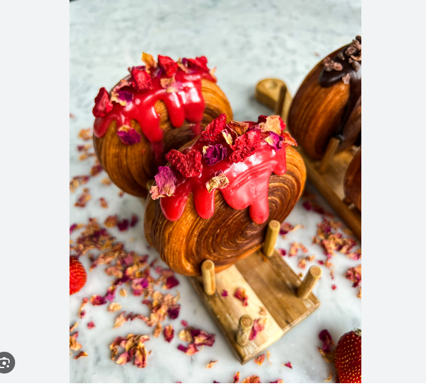

Chocolate Croissant (Pain au Chocolat)
Today we are going to learn how to make the tiktok famous chroissants from Lafayette Bakery. The French way to say chocolate chroissants are pain au chocolat. If you are ever having a bad day, all you need is some chroissants with the chocolate melting to put you in a better mood.
\
Ingredients
- 1/2 sticks unsalted butter, softened
- 1 cup granulated sugar
- 2 large eggs
- 2 teaspoons vanilla extract
- 3 1/2 cups all-purpose flour
- 1/2 cup unsweetened cocoa powder
- 1 teaspoon salt
- 1 cup semi-sweet chocolate chips
- Powdered sugar for dusting
Instructions
- In a small bowl, combine the sugar and yeast. Add the warm milk and let sit for 5-10 minutes, until the mixture becomes frothy.
- In a large mixing bowl, beat the softened butter and sugar until light and fluffy. Beat in the eggs one at a time, followed by the vanilla extract.
- Add the flour, cocoa powder, and salt to the bowl and mix until a dough forms.
- Knead the dough on a floured surface and let it sit for 2 hours
- Preheat your oven to 375°F (190°C).
- Bake the croissants for 15-20 minutes, until they are golden brown.